Abstract
Unpaired remote sensing image dehazing avoids the need for aligned hazy–clean pairs, but real haze varies widely in density, colour cast and spatial distribution, and training on the whole data distribution at once lets the most common haze conditions dominate while rarer ones are neglected. We propose HARD-Dehaze, a Hardness-Aware Remote-sensing Dehazing framework that uses a vision-language model to indicate the degradation level. Hazy training images are embedded with DA-CLIP and partitioned into degradation clusters; the haze-removal generator is then scored on each cluster, and the sample distribution of every epoch is adjusted so that the clusters on which the model performs worst are enriched with new samples while those that are already stable are curtailed. To adapt to diverse haze, an asymmetric Mixture-of-Experts bottleneck combines dense soft routing in shallow blocks with sparse hard routing in deeper ones, conditioned on a dark-channel-prior haze descriptor; and haze-aware prompt learning over graded haze sequences penalises the residual haze that remains in partially dehazed outputs. Experiments on SateHaze1k, RRSHID, RICE1 and RICE2, and out-of-distribution evaluation on RSID, show that HARD-Dehaze reaches the best PSNR among unsupervised methods on all four benchmarks while shortening training time.
Keywords: Remote sensing image dehazing; Unpaired learning; Active learning; Mixture of experts; Vision-language prompt learning; Cycle consistency
System Architecture

We propose the HARD-Dehaze framework (Figure 1), consisting of a haze-removal generator GA, a haze-synthesis generator GB, and two domain-specific discriminators. GA recovers a dehazed image and estimates a haze prior embedding from its own input. GB is always conditioned on an embedding measured on a real hazy image, so the haze it synthesizes follows real haze statistics instead of settling on arbitrary degradations. At inference only GA is used.
At the end of each iteration an active learning strategy dynamically regulates the data distribution in the latent space (Figure 2): it expands the clusters on which the model still dehazes inconsistently with new samples, and curtails the clusters on which haze removal is already stable.

Degradation-aware active learning. Hazy images are embedded with the DA-CLIP image encoder and split into K clusters by k-means. Every few epochs the generator is scored on each cluster by the drop in DA-CLIP haze probability and by how far its outputs have moved from the cluster's hazy centroid towards the clean centroid. New samples are allocated in inverse proportion to the score, so the best-handled cluster receives almost none and the worst-handled ones are progressively enriched.
Asymmetric Mixture-of-Experts. Three MoE blocks sit in the bottleneck of GA. The first is a Soft-MoE block with dense routing; the other two are Hard-MoE blocks with top-2 routing over experts of different widths, conditioned on a haze descriptor computed from the dark channel prior and spectral statistics. Thin haze can go to lighter experts, and the high-capacity expert is kept for dense, uneven haze.
Haze-aware prompt learning. A learned CLIP prompt scores how much haze an image still contains. It is trained on graded haze sequences built with the atmospheric scattering model and a violation-aware sampler that revisits the level transitions the prompt still misorders, so partially dehazed outputs are penalised rather than treated as clean.
Result Demonstration
One scene, four images. Hover anywhere overTap anywhere on any tile and all four magnify the same point at once, so you can pick a hazy region in the input and follow what each method did to it, side by side against the ground truth. The sample below shows the magnifier working; the results are underneath it.
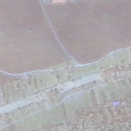


About the SOTA baseline (UBRFC-Net). UBRFC-Net, short for Unsupervised Bidirectional Contrastive Reconstruction and Adaptive Fine-Grained Channel Attention Networks (Neural Networks, 2024), dehazes without paired hazy/clean training data by combining bidirectional contrastive reconstruction with adaptive fine-grained channel attention. It is the strongest unsupervised baseline in our comparison, ranking second on SateHaze1k and RRSHID, which makes it the method our result is set against above.
Our Results
The slider below runs on its own to show what the control does. The six scenes under it behave identically, but are yours to drive: drag a handle, click anywhere on an image, or use the arrow keys. Fully left = our dehazed output; fully right = the hazy input. Hover any of them for a 2× magnifier over the residual haze.


Comparison
Qualitative comparison on SateHaze1k and RRSHID, with the thin, moderate and thick haze subsets merged into one test set. Each column is the same input processed by one method; rows (a)–(j) are ten scenes of varying haze density, texture and structure. Click any image to enlarge it, then use the arrow keys (or swipe) to flip between methods on the same scene.


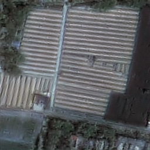


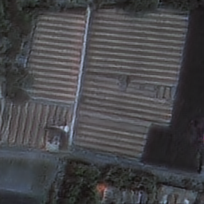
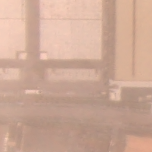
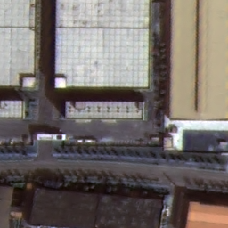
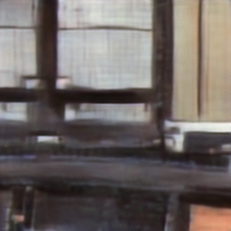
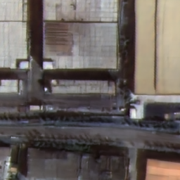
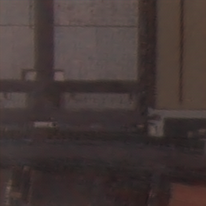
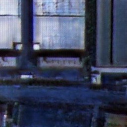
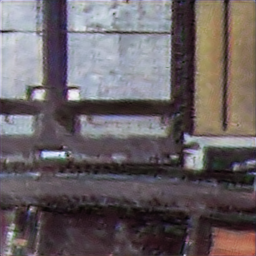
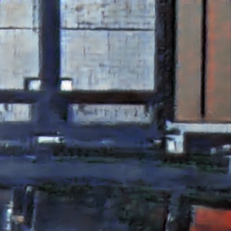
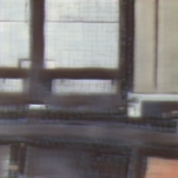
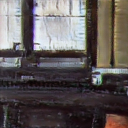
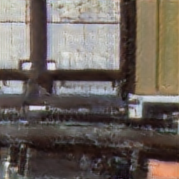
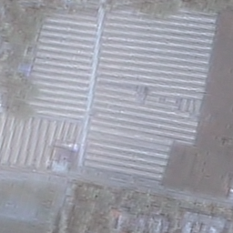
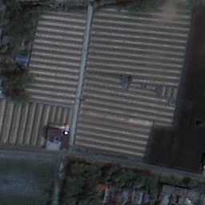
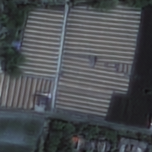

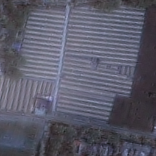


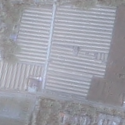
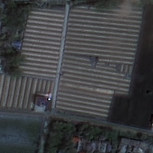
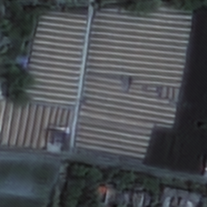

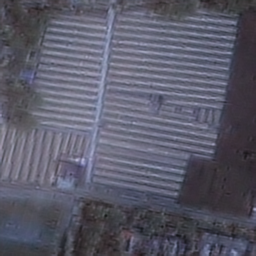

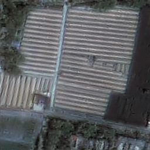

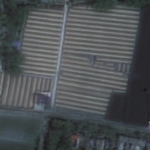

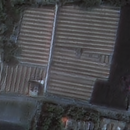
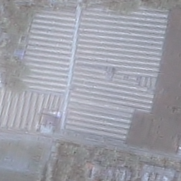
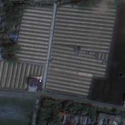


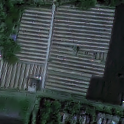
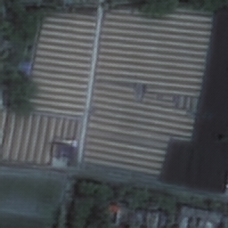

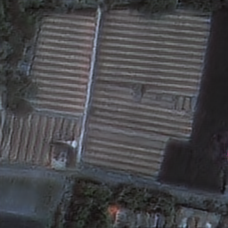

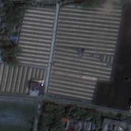
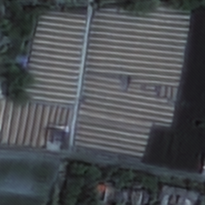

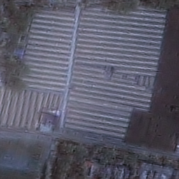


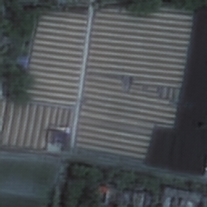
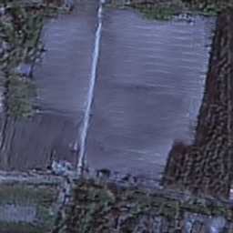
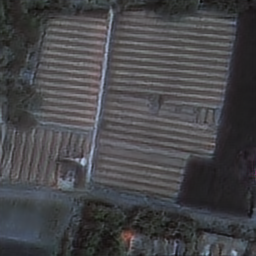
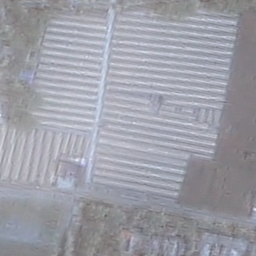
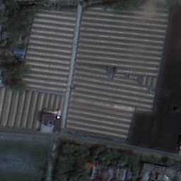


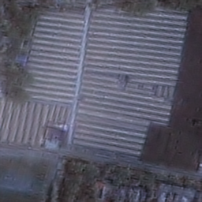
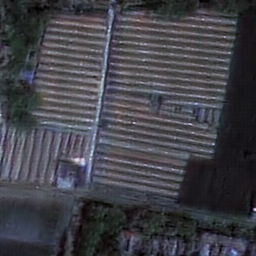


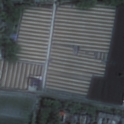
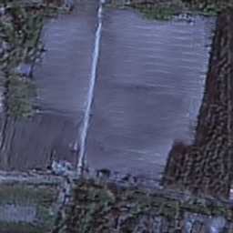

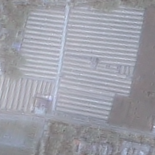


Quantitative comparison on SateHaze1k, RRSHID, RICE1 and RICE2. S and U denote supervised and unsupervised methods. Among the unsupervised methods, the best result is in red and the second best in blue.
| Methods | SateHaze1k | RRSHID | RICE1 | RICE2 | ||||
|---|---|---|---|---|---|---|---|---|
| PSNR↑ | SSIM↑ | PSNR↑ | SSIM↑ | PSNR↑ | SSIM↑ | PSNR↑ | SSIM↑ | |
| Diff-HazeNet (S) | 20.43 | 0.845 | 21.67 | 0.649 | 31.68 | 0.947 | 31.18 | 0.871 |
| MCAF-Net (S) | 22.99 | 0.861 | 23.77 | 0.665 | 31.95 | 0.936 | 31.84 | 0.869 |
| DDLNet (S) | 24.87 | 0.969 | 24.90 | 0.747 | 17.09 | 0.634 | 33.23 | 0.900 |
| UCL-Dehaze (U) | 19.55 | 0.784 | 18.92 | 0.489 | 26.78 | 0.893 | 24.62 | 0.798 |
| USID-Net (U) | 19.65 | 0.844 | 20.36 | 0.564 | 25.59 | 0.876 | 23.42 | 0.759 |
| DehazeSB (U) | 22.34 | 0.887 | 20.01 | 0.527 | 28.11 | 0.931 | 19.20 | 0.742 |
| Cycle-SNSPGAN (U) | 16.47 | 0.643 | 19.05 | 0.535 | 24.29 | 0.838 | 22.47 | 0.732 |
| UBRFC-Net (U) | 23.05 | 0.879 | 21.05 | 0.579 | 17.83 | 0.695 | 13.83 | 0.603 |
| Ours (U) | 24.76 | 0.894 | 21.68 | 0.638 | 29.55 | 0.927 | 27.82 | 0.832 |
Live Demo
Video
Code
The source code of HARD-Dehaze is available on GitHub.
BibTeX
Update with journal, volume, pages and DOI after publication.
@misc{duong2026harddehaze,
title = {Learning What Is Hard: Vision-Language Guided Active Learning for Unpaired Remote Sensing Image Dehazing},
author = {Duong, Thi-Quynh-Nhu and Le, Thi-Ngoc-Hanh},
year = {2026},
note = {Manuscript under review}
}